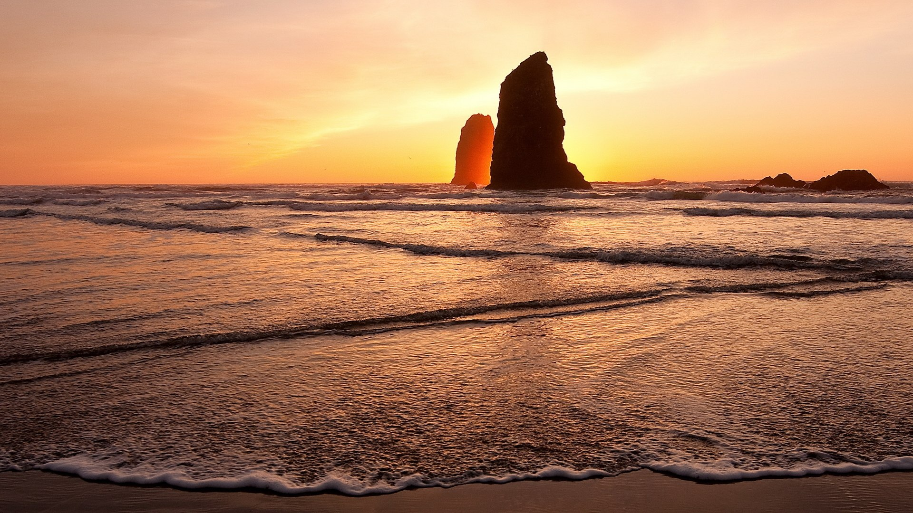
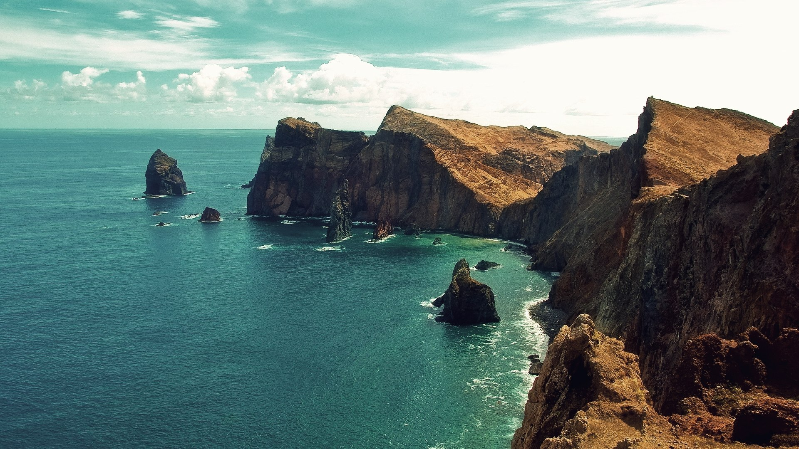
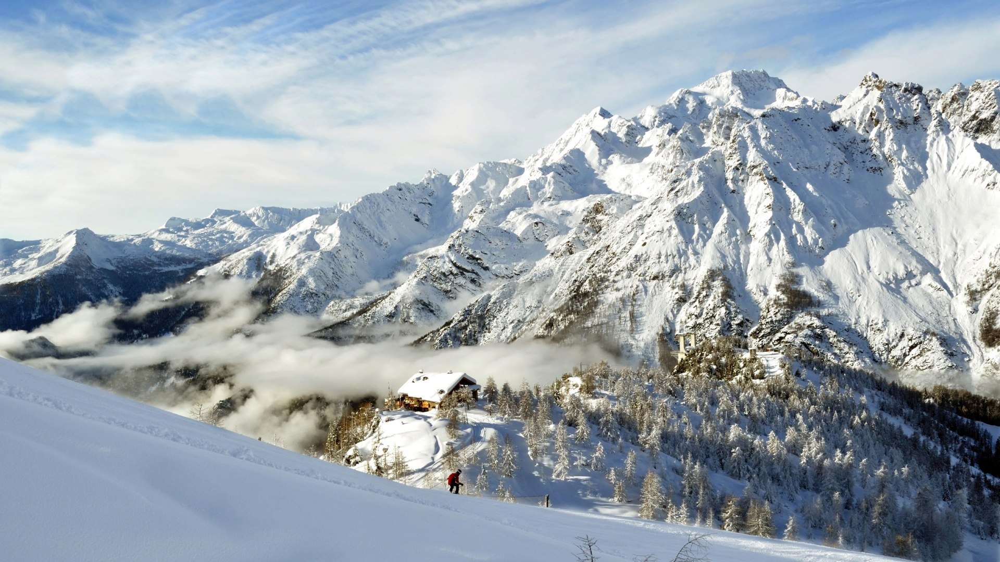
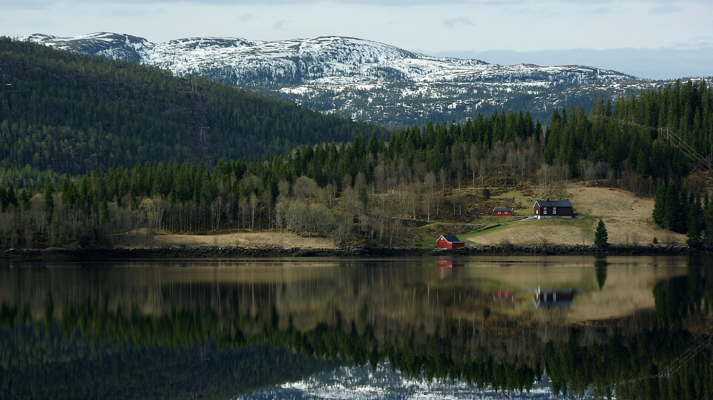
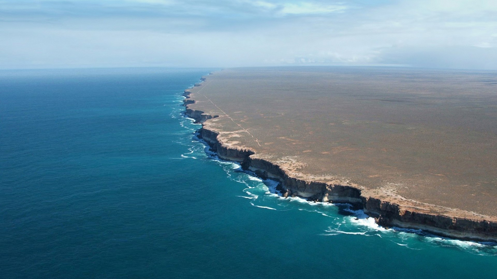
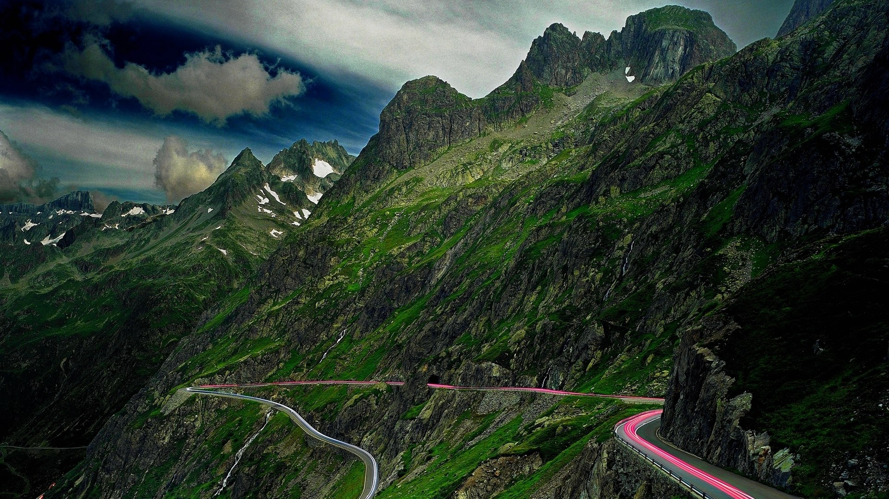
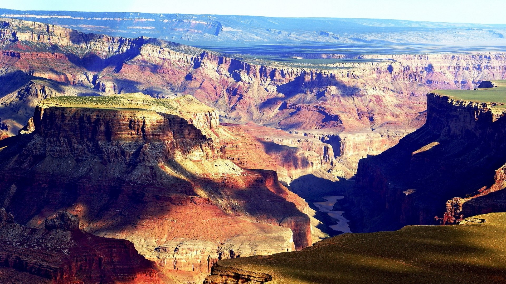

Ах, не говорите мне про Австрию! Я ничего не понимаю, может быть, но Австрия никогда не хотела и не хочет войны. Она предает нас. Россия одна должна быть спасительницей Европы. Наш благодетель знает свое высокое призвание и будет верен ему. Вот одно,
во что я верю.
Нашему доброму и чудному государю предстоит величайшая роль в мире, и он так добродетелен и хорош, что Бог не оставит его, и он исполнит свое призвание задавить гидру революции, которая теперь еще ужаснее в лице этого убийцы и злодея. Мы одни должны искупить
кровь праведника. На кого нам надеяться, я вас спрашиваю?
Англия с своим коммерческим духом не поймет и не может понять всю высоту души императора Александра. Она отказалась очистить Мальту. Она хочет видеть, ищет заднюю мысль наших действий. Что они сказали Новосильцеву? Ничего. Они не поняли, они не могли
понять самоотвержения нашего императора, который ничего не хочет для себя и все хочет для блага мира. И что они обещали? Ничего.
И что обещали, и того не будет! Пруссия уже объявила, что Бонапарте непобедим и что вся Европа ничего не может против него... И я не верю ни в одном слове ни Гарденбергу, ни Гаугвицу. Cette fameuse neutralité prussienne, ce n'est qu'un piège. Я верю в
одного Бога и в высокую судьбу нашего милого императора. Он спасет Европу!.. — Она вдруг остановилась с улыбкой насмешки над своею горячностью.
Скажите, — прибавил он, как будто только что вспомнив что-то и особенно-небрежно, тогда как то, о чем он спрашивал, было главной целью его посещения, — правда, что l'impératrice-mère желает назначения барона Функе первым секретарем в Вену? C'est un pauvre
sire, ce baron, à ce qu'il paraît. — Князь Василий желал определить сына на это место, которое через императрицу Марию Феодоровну старались доставить барону.
Monsieur le baron de Funke a été recommandé à l'impératrice-mère par sa sur, — только сказала она грустным, сухим тоном. В то время как Анна Павловна назвала императрицу, лицо ее вдруг представило глубокое и искреннее выражение преданности и уважения,
соединенное с грустью, что с ней бывало каждый раз, когда она в разговоре упоминала о своей высокой покровительнице. Она сказала, что ее величество изволила оказать барону Функе beaucoup d'estime, и опять взгляд ее подернулся грустью. Monsieur le
baron de Funke a été recommandé à l'impératrice-mère par sa sur, — только сказала она грустным, сухим тоном. В то время как Анна Павловна назвала императрицу, лицо ее вдруг представило глубокое и искреннее выражение преданности и уважения, соединенное
с грустью, что с ней бывало каждый раз, когда она в разговоре упоминала о своей высокой покровительнице. Она сказала, что ее величество изволила оказать барону Функе beaucoup d'estime, и опять взгляд ее подернулся грустью.







Map Location
OR